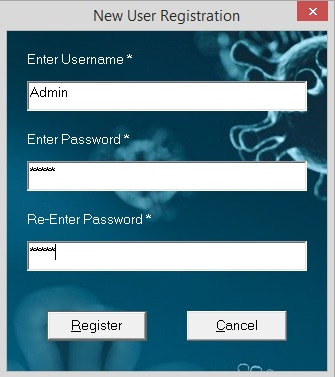
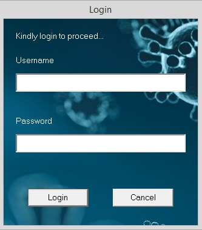

Registering an admin user is the first thing you want to do after installing the app, as you need admin user credentials to add, delete or update data of COVID-19 in the database. As a first time user, you can directly register your account by entering your username and password as shown in the below image. After Register is clicked, it gives a message saying New user registration successful!. Make sure to enter both Enter Password and Re-Enter Password match.

Once the first user is registered, next new user registrations are to be uproved by any of the existing users. So, once the Register New User is clicked, a Login window pops up asking for the existing user's credentials as shown in the below image.

Once the proper login credentials are given and clicked on login button, a Login Success message pops up and directs to Register New User window after closing the pop-up. From here the process of new user registration follows the 'Register First User' method.